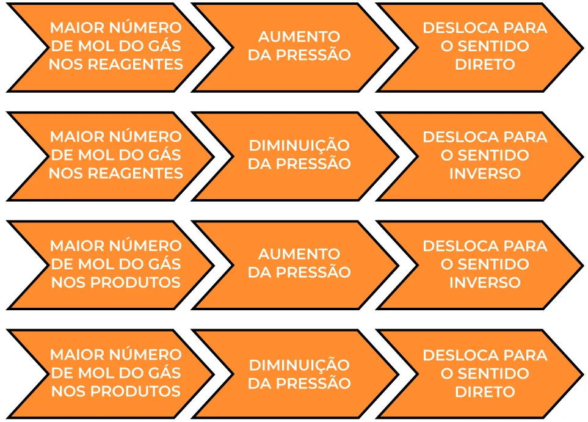

Playlist de Química

Parte por milhão (ppm)
Partes por milhão (ppm) é uma unidade de medida de concentração usada para expressar proporções muito pequenas, significando uma parte de uma substância para cada milhão de partes da mistura total. É frequentemente utilizada em química para descrever concentrações de substâncias em soluções, como a concentração de poluentes na água, ou em processos de controle de qualidade, indicando defeitos por milhão de unidades produzidas

Diluição das soluções
A diluição de soluções é o processo de diminuir a concentração de uma solução pela adição de mais solvente. Nesse processo, a quantidade de soluto permanece a mesma, enquanto o volume total aumenta, resultando em uma menor concentração.

Misturas
< p>Misturas são a combinação de duas ou mais substâncias puras. Elas se classificam em homogêneas, que apresentam uma única fase (como água e sal), e heterogêneas, que apresentam mais de uma fase visível (como água e óleo). Exemplos comuns incluem o ar (uma mistura gasosa), a água mineral (mistura de água e sais minerais) e o granito (mistura de quartzo, feldspato e mica).
Equilíbrio Químico
Equilíbrio químico é um estado de reações reversíveis em que a velocidade da reação direta é igual à velocidade da reação inversa. Isso significa que a transformação de reagentes em produtos ocorre na mesma taxa que a transformação de produtos de volta em reagentes, resultando em concentrações constantes de todas as substâncias envolvidas, mesmo que as reações continuem acontecendo. Esse estado é um equilíbrio dinâmico, onde as reações não param, mas se igualam

O Princípio de Le Chatelier afirma que, se um sistema químico em equilíbrio for perturbado por uma mudança de concentração, temperatura ou pressão, ele se deslocará (na reação direta ou inversa) para minimizar essa perturbação, buscando um novo estado de equilíbrio. Basicamente, o sistema "reage" à mudança para tentar voltar ao normal, seja produzindo mais reagentes, mais produtos, ou ajustando-se à nova temperatura ou pressão.
O Produto Iônico da Água (Kw) é 10-1410 to the negative 14 power 10−14 a 25°C e descreve o equilíbrio H2O⇌H++OH−cap H sub 2 cap O is in equilibrium with cap H raised to the positive power plus cap O cap H raised to the negative power 𝐻2𝑂⇌𝐻++𝑂𝐻−, sendo fundamental para definir pH (potencial hidrogeniônico, relacionado a H+cap H raised to the positive power 𝐻+) e pOH (potencial hidroxiliônico, relacionado a OH−cap O cap H raised to the negative power 𝑂𝐻−). Em água pura, [H+] = [OH-] = 10-710 to the negative 7 power 10−7 M, resultando em pH = 7 e pOH = 7 (neutro); em soluções, pH + pOH = 14, e o caráter muda (pH < 7 ácido, pH> 7 básico).

Título ou fração em massa é a razão entre a massa do soluto e a massa total da solução, usada para expressar a concentração de uma solução. título é o resultado da divisão (geralmente um número decimal), e a fração em massa ou porcentagem em massa é obtida multiplicando o título por 100, resultando em um valor percentual.

A concentração comum expressa a massa do soluto em gramas por volume da solução em litros ( g/Lg / cap L 𝑔/𝐿), enquanto a concentração molar (ou molaridade) expressa a quantidade de matéria do soluto em mols por volume da solução em litros ( mol/Lm o l / cap L 𝑚𝑜𝑙/𝐿). A molaridade considera a quantidade de matéria em mols, enquanto a concentração comum usa a massa do soluto.

As soluções são classificadas principalmente por estado físico (sólida, líquida, gasosa), grau de saturação (insaturada, saturada, supersaturada) e natureza do soluto (molecular, iônica). Também podem ser classificadas pela concentração, que as divide em diluídas e concentradas.